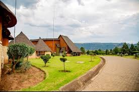
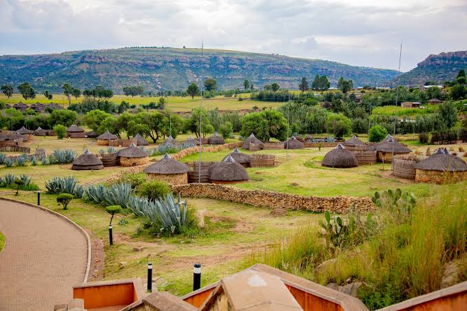

Thaba-Bosiu - Spirit of the Mountain


.jpg) ❮
❯
❮
❯
❮
❯
Thaba-Bosiu is a place of deep cultural and historical importance in Lesotho. This iconic sandstone plateau served as the stronghold of King Moshoeshoe I, the founder of the Basotho nation. Located just outside Maseru, Thaba-Bosiu holds the stories of bravery, unity, and nation-building that shaped Lesotho's identity.